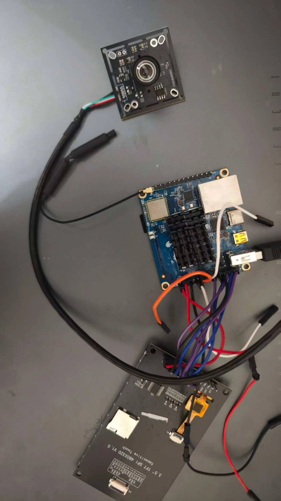
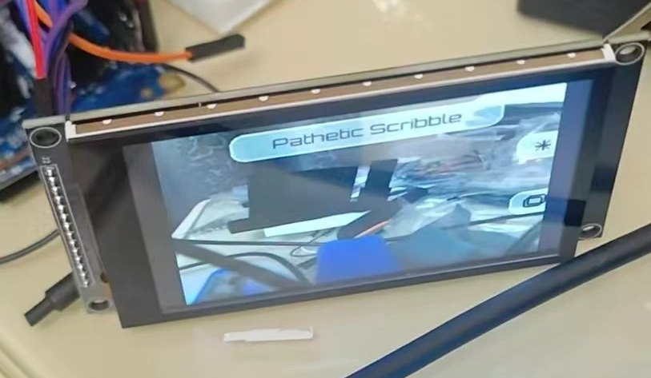

ImageGenCam

A handheld point-and-shoot that doesn't save what it sees, it saves what an AI reimagines. Press the shutter, the photo goes to an image model with a chosen prompt, and the transformed result comes back on the panel a few seconds later.
Forked from openai/imagegencam (Raspberry Pi original) and ported to the Orange Pi Zero 2.
Hardware

| Part | Detail |
|---|---|
| Board | Orange Pi Zero 2 (Allwinner H616), Ubuntu Focal, legacy 4.9 kernel |
| Display | 320×480 SPI TFT (ST7796U / MSP3526), 5 V, on SPI1 /dev/spidev1.1 |
| Camera | USB (Sunplus 2M) soldered to the 13-pin header's USB2 pins 1 to 4, since the case has no USB-A opening |
| Buttons | 1 MX switch (shutter) + 4 × 6×6 mm tactile, diamond cluster right of the screen |
| Power | 5 V / 2800 mAh single-18650 pack → SPDT switch → distribution perfboard |
| Flash | Hot shoe via MOC3021 opto-triac on PC11 (galvanically isolated) |
Software
Python, no framework. A threaded controller drives the display, camera and GPIO; a stdlib HTTP server serves a phone UI from the same box.

- 5 prompt presets, including a custom Graduation Day 🎓, editable from the phone
- Magic mode: a long press shoots a reference photo and has an LLM invent a new prompt from it
- Persistent job queue: survives reboots and network drops, and drains when connectivity returns
- Web UI: a gallery with cached thumbnails, multi-select ZIP download, batch delete, Wi-Fi switching, and a Remote tab with five virtual buttons
- Autostart: a systemd service on port 80, boots straight into the camera
- 63 tests, all green
The China problem
The project is built on the Vercel AI Gateway, and Vercel, OpenAI and Google are all blocked behind the Great Firewall. Two answers shipped:
chinabranch: SiliconFlow (Qwen-Image-Edit + Qwen2.5-VL) via a newIMAGE_GEN_API=generationsmode and a chat-based magic mode- As it turned out, Vercel works from the current location, and both API tests pass on-device
Bring-up: what actually broke
| Symptom | Cause |
|---|---|
| GPIO crash on every script | libgpiod raised ValueError on the 4.9 kernel and the automatic fallback did not catch it. Fixed, with tests added |
Scripts ignored .env |
The hardware scripts never loaded it. Fixed |
| Panel lit but blank | Display and board did not share a ground, the day's real villain |
| Preview stuck at 5 fps | Each frame was sliced into 75 Python-side SPI writes; now a single writebytes2, about 3× faster |
| Colors inverted | DISPLAY_INVERT=1 |
| Web UI unreachable on :8000 | The service runs on port 80; only manual runs use 8000 |
The case
The enclosure was designed in SolidWorks and virtually assembled around the board, display and battery. Drag to rotate the model, scroll to zoom.
Printing it
The shell coming off the printer.
Status
Working end to end: power, display, camera, buttons (via the web remote), AI generation, gallery and autostart. The physical buttons need reseating (loose jumpers) and the hot shoe isn't wired yet. The case is designed and printed; the full enclosure and wiring reference live at the docs site (REV G).